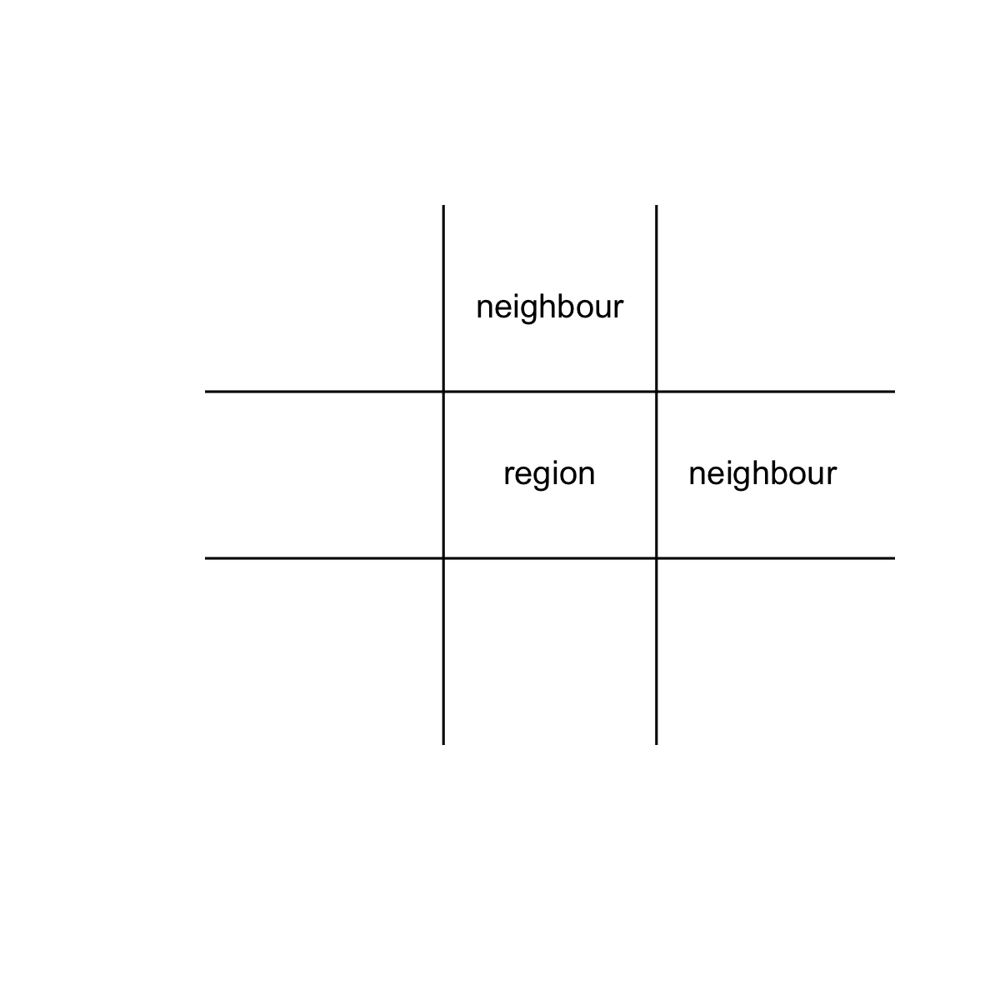
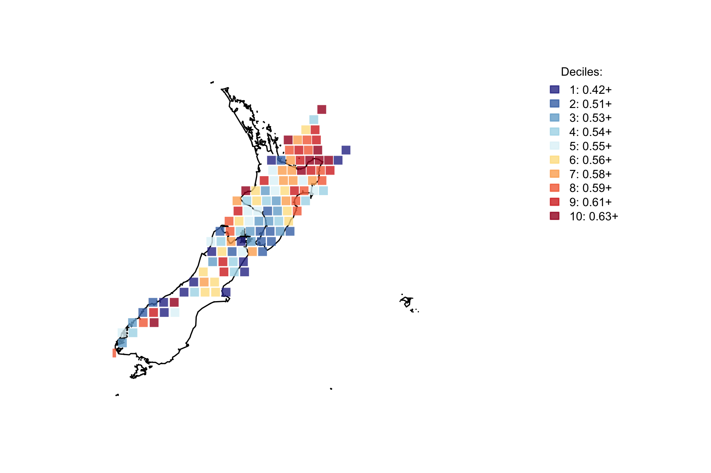

Chapter 8 It is not uniform
The question “Is this a general effect” is closely related to the question “Why has no-one noticed this before, and been convinced enough to push the matter”. If it is a general effect, then you should observe a similar response in all subareas of a region. If the effect is regional, then local geological conditions are going to condition the response.
Using the gridded regions and with either of these assumptions being true:
- if the the region is not sensitive to a night/day effect
- or the sensitivity is confined only to that region
then a high proportion of night earthquakes in one region should not influence the number of night earthquakes in neighbouring regions. If the number of night earthquakes is both sensitive to local geological conditions, and those conditions extend beyond the 50 kilometre grid areas, then similar levels of night proportion earthquakes should be found in adjacent grids. This is a test of both the effect itself not being the result of chance, and the distribution of the effects results not being the result of chance
For the purposes of this question, I can rank the proportion of night earthquakes into ten steps (deciles) from highest to lowest. I define similar as a grid square being within one decile step of its neighbour, and I define neighbour as being the grid square to the north or east of the grid square in question. This is to stop double counting with the square to the south of a northern square being the same neighbour as the square to the north of the southern square.

I also limit the grids used to those with more than 80 total earthquake events, so that the sample is large enough the proportion is likely to be a true reflection of the region. In reality, the threshold of 80 is a somewhat arbitrary one that balances having a good number of earthquakes with a good number of grid areas.
The current state is:

Only the very lowest decile contains any grid areas with less than 50% of the earthquakes at night. By eye there seems to be a lot of clustering, but the trick is to measure how unlikely that is.
Using the idea of similar neighbours being one decile apart or the same, 83 (45.86%) of the 181 neighbour pairs are similar.
To determine how likely this is to have occurred, I made a test by simulation. Taking the idea that there are 119 decile values that form the 181 pairs, I repeatedly randomly shuffle the locations of the deciles. This is done on the assumption of independence- that if the areas are unrelated and it is a random process, then the deciles are equally likely to be in any of the locations. Then for each shuffle result I count up how many neighbour pairs are similar. By comparing the 83 observed values with how often that value or more comes up in the simulation, I find out how unlikely the result would be to occur by chance.
As a code writing efficiency note, to be able to do a lot of simulations (100,000,000) quickly (less than 15 minutes), I work out the specific combinations of neighbours ahead of time and provide that, as the combinations are not going to change between simulations.
In the 100,000,000 replications of the simulation, the simulation produced a result as high as the observed one 13 times. As the considering it as a two-sided test, where a extreme result in either direction from the mean is unusual (in this case a freakishly low score would also indicate unnatural arrangement of deciles), the result is 13 in 100,000,000 (as there were 0 that low). Without reading to much into the finer details of this, it does suggest that the observed result is very, extremely unlikely to occur by chance, being outside of 5 sigma.
8.1 Formal Statement
As the geographic clustering of night earthquake is not due to chance, we must conclude that not only is there an effect, that effect is influenced by local geological conditions. Those earthquakes influenced by the sun’s position should thus be seen as a local geological response to solar gravity conditions.
8.2 Chapter Code
## ----setup, include=FALSE------------------------------------------------
knitr::opts_chunk$set(echo = FALSE)
knitr::opts_chunk$set(warnings=FALSE)
knitr::opts_chunk$set(errors=FALSE)
knitr::opts_chunk$set(message=FALSE)
knitr::opts_chunk$set(dpi = 150)
knitr::opts_chunk$set(fig.width = 6)
knitr::opts_chunk$set(fig.height = 4)
## ------------------------------------------------------------------------
Sys.setenv(TZ = "UTC")
library(dplyr)
library(ggplot2)
library(lubridate)
library(maptools)
library(binom)
library(parallel)
library(plotrix)
library(solidearthtide)
library(tidyr)
library(maps)
library(mapdata)
# Assumes there is eqnz_processed data created in chapter 2
load("eqdata/eqnz_processed.RData")
old_par <- par()
lbls <- c(
"1 sigma", "2 sigma",
"3 sigma", "4 sigma",
"5 sigma", "6 sigma",
"7 sigma")
typs <- c(1,1,1,1,1,1,1)
weights <- c(3,3,3,3,3,3,3)
clrs <- rev(c('#ffffcc','#d9f0a3','#addd8e','#78c679','#41ab5d','#238443','#005a32'))
## ---- fig.height=4, fig.width=4------------------------------------------
plot(x=c(0,3), y=c(0,3), axes=FALSE, xlab="", ylab="", type="n")
abline(h=1)
abline(h=2)
abline(v=1)
abline(v=2)
text(1.5,1.5,"region", cex=0.8)
text(2.5,1.5,"neighbour", cex=0.8)
text(1.5,2.5,"neighbour", cex=0.8)
## ------------------------------------------------------------------------
reg_eq <- eqnz %>% group_by(eq_roundedlat, eq_roundedlong,
eq_gridpoint_y, eq_gridpoint_x) %>%
summarise(region_tot = n(), night_prop = sum(eq_is_night) / region_tot) %>%
filter(region_tot > 80) %>% ungroup() %>%
mutate(decile = ntile(night_prop, 10))
ten_colours <- rev(c('#a50026','#d73027','#f46d43','#fdae61','#fee090',
'#e0f3f8','#abd9e9','#74add1','#4575b4','#313695'))
with_alpha <- paste(ten_colours, "CC", sep="")
grid_min <- reg_eq %>% group_by(decile) %>%
summarise(from= min(night_prop))
## ------------------------------------------------------------------------
layout(matrix(c(1,1,1,2), ncol=4))
map("nzHires", ylim=c(-48.5, -33.5))
points(reg_eq$eq_roundedlong, reg_eq$eq_roundedlat, pch=15, col=with_alpha[reg_eq$decile], cex=1.5)
par(mar=c(0,0,0,0))
plot(x=c(0,10), y=c(0,10), type="n", bty="n", axes=FALSE)
legend(0,9, legend=paste(1:10, ": ",round(grid_min$from,2), "+", sep="") , fill=with_alpha, bty="n", xjust=0,
title="Deciles:", cex=0.9, border=with_alpha)
par(mar=old_par$mar)
par(mfrow=c(1,1))
## ------------------------------------------------------------------------
xgrids <- min(eqnz$eq_gridpoint_x):max(eqnz$eq_gridpoint_x)
ygrids <- min(eqnz$eq_gridpoint_y):max(eqnz$eq_gridpoint_y)
squares <- data.frame(xg = rep(xgrids, times=length(ygrids)),
yg = rep(ygrids, each=length(xgrids)))
squares$east_x <- squares$xg + 1
squares$north_y <- squares$yg + 1
gridx <- c(squares$xg, squares$xg)
gridy <- c(squares$yg, squares$yg)
neighbourx <- c(squares$east_x,squares$xg)
neighboury <- c(squares$yg,squares$north_y)
potential_neighbours <- data.frame(gridx, gridy, neighbourx, neighboury)
reg_eq$grid_index <- 1:nrow(reg_eq)
actual_grid <- merge(potential_neighbours,
reg_eq[,c("eq_gridpoint_x", "eq_gridpoint_y", "grid_index", "decile")],
by.x= c("gridx","gridy"),
by.y= c("eq_gridpoint_x", "eq_gridpoint_y"))
actual_neighbours <- merge(actual_grid,
reg_eq[,c("eq_gridpoint_x", "eq_gridpoint_y", "grid_index", "decile")],
by.x= c("neighbourx","neighboury"),
by.y= c("eq_gridpoint_x", "eq_gridpoint_y"))
names(actual_neighbours) <- c("neighbourx", "neighboury", "gridx",
"gridy", "grid_index", "decile_grid", "neighbour_index", "decile_neighbour")
grids <- actual_neighbours$grid_index
neighbours <- actual_neighbours$neighbour_index
deciles <- reg_eq$decile
similar <- sum(abs(actual_neighbours$decile_grid - actual_neighbours$decile_neighbour) < 2)
## ------------------------------------------------------------------------
if(!file.exists("eqdata/simResult.RData")){
repli <- function(decs, grids, neighbours){
decile <- sample(decs, size=length(decs), replace=FALSE)
grid_dec <- decile[grids]
neighbour_dec <- decile[neighbours]
sum(abs(grid_dec - neighbour_dec) < 2)
}
replication_size <- 100000000
# can comfortably get up to 100000000 in one go (15 minutes) on 8 GB machine
# if run in parrallel on 7 cores
# but another order of magnitude crashes things
# Calculate the number of cores
no_cores <- detectCores() - 1
# Initiate cluster
cl <- makeCluster(no_cores)
# make R objects available to cluster
clusterExport(cl, varlist=c("repli", "deciles", "grids", "neighbours"))
# do function in parallel
similar_rep <- parSapply(cl, 1:replication_size,
function(x){repli(deciles, grids, neighbours)})
stopCluster(cl)
save(similar_rep, file="eqdata/simResult.RData")
}
load("eqdata/simResult.RData")
sim_result <- sum(similar_rep >= similar)
sim_mean <- mean(similar_rep)
low_end <- sim_mean - (similar - sim_mean)
sim_extreme <- sum(similar_rep >= similar | similar_rep <= low_end)